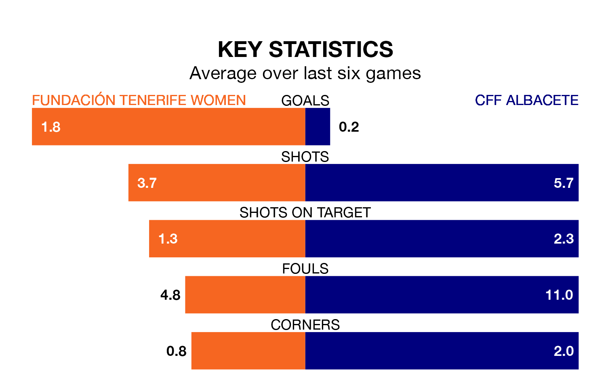

CFF Albacete travel for Saturday's early match against Fundación Tenerife Women looking to bounce back from defeat last time out in Segunda Federación Femenina.
CFF Albacete, who sit zero in the league after 19 games, fell to a 3-0 home defeat to Elche Women on February 4.
They face a Fundación Tenerife side who picked up a win in their last match, a 2-0 victory against Femarguín Women, and who sit sixth in the table.
With 13 goals in 19 games so far this season, CFF Albacete are the league's-14th-lowest scorers with 0.7 goals per game. And they are conceding more than average, letting in 38 goals at a rate of 2.0 per game.
Fundación Tenerife, meanwhile, are above average scorers, with 1.5 goals per game, compared to a league average of 1.3. They have conceded 0.7 goals per game.
The hosts are in fantastic form in Segunda Federación Femenina, with five wins and a draw from their last six games.
With a win and five losses over that period, the away side's form is much worse – they have taken three points from 18, compared to Fundación Tenerife's 16.
Updated: 11:47 (UTC), 05/02/24